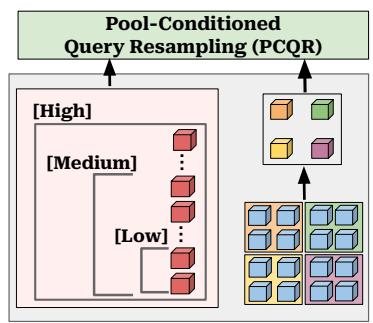

Figureure 4 · | High-Level Overview of the PARCEL ArchitectureFigure 4 | High-Level Overview of the PARCEL Architecture. PARCEL dynamically divides the labor of visual feature extraction into a unified pipeline. Uncompressed visual encoder features are first spatially pooled to create deterministic 2D Anchors that secure the low-frequency geometric layout. A supporting set of query tokens then undergoes Pool-Conditioned Query Resampling (PCQR). After interacting with the spatial anchors through PCQR, these queries act as Semantic Explorers …K & V that extract complementary information from the raw visual features. The final concatenated repre-Budget-Aware … … sentation provides an effective budget-aware context to the language decoder.这张图概括 PARCEL 的整体方法流程。阅读时先看模块之间传递的训练信号，再看作者如何把目标拆成可优化的子问题。

(c) PARCEL (Ours) [Med.] … Figure 2 | High-Level Overview of MQT, ${ \bf { M } } ^ { 3 }$ (c) PARCEL (Ours) [Med.] … Figure 2 | High-Level Overview of MQT, ${ \bf { M } } ^ { 3 }$ [Med.] … and PARCEL (Ours). $\mathbb { M } ^ { 3 }$ compresses visual features through rigid spatial pooling, MQT uses elastic query tokens, and PARCEL combines spatial anchor [Low] … [Low] … tokens with pool-conditioned query resampling, allowing it to compress more effectively.这张图概括 PARCEL 的整体方法流程。阅读时先看模块之间传递的训练信号，再看作者如何把目标拆成可优化的子问题。
核心问题
视觉 token 是 VLM 中通用视觉表征的接口，压缩策略会直接决定哪些视觉信息进入语言模型。
方法拆解
建立 Pool-Anchored Resampling：spatial pool tokens 保留低频布局，conditioned elastic queries 汇聚细粒度非局部信息。